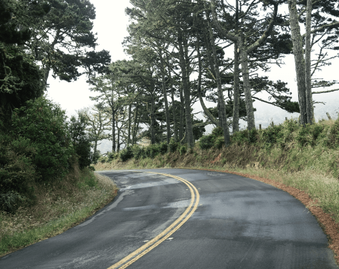

Шоссе, ТТ и Грэвел
Триатлонные старты, горные серпантины или грейвел заезды по живописным маршрутам – нужно только определиться с выбором велосипеда и отправиться в путь.


Cannondale Systemsix

«Катайся много или мало, долго или коротко, как хочешь - но катайся»
Эдди МерксВелогонщик
Шоссе
На шоссейном велосипеде можно ездить по асфальту на разных градиентах: будь то горы или равнины. Гонки проходят в командном пелотоне, но тренироваться можно и самостоятельно.


-

Cervelo Caledonia-5
-

Cannondale Systemsix Himod
-

Trek Domane SL-7
Тренировки
Чтобы найти маршрут для тренировки можно воспользоваться сервисом Komoot, а записать эти тренировки поможет приложение Strava, а также это приложение позволит построить тренировочный план.
